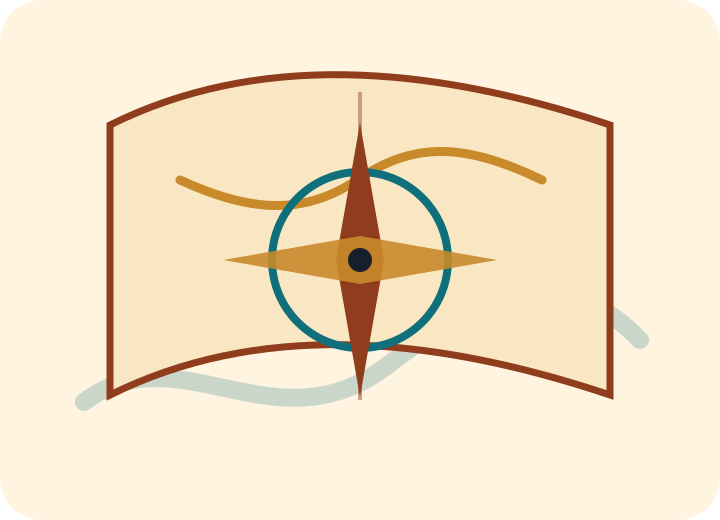

La monarchia spagnola
Ferdinando d’Aragona e Isabella di Castiglia sostennero il viaggio dopo la conclusione della Reconquista. La spedizione poteva portare prestigio, ricchezza e vantaggi commerciali.
Prima del viaggio
Nel XV secolo le monarchie europee cercavano nuove rotte commerciali, prestigio politico e accesso diretto ai mercati orientali.
Le merci provenienti dall’Asia, come spezie, sete e prodotti di lusso, erano molto richieste in Europa. Le vie tradizionali erano lunghe, costose e attraversavano intermediari commerciali.
In questo contesto maturò il progetto di Colombo: raggiungere l’Asia navigando verso ovest attraverso l’Atlantico. La sua idea si basava su una sottovalutazione delle reali dimensioni della Terra e della distanza tra Europa e Asia.
Ferdinando d’Aragona e Isabella di Castiglia sostennero il viaggio dopo la conclusione della Reconquista. La spedizione poteva portare prestigio, ricchezza e vantaggi commerciali.
Navigatore genovese al servizio della Spagna, propose una rotta occidentale verso l’Asia. Il suo progetto fu rischioso, ma prometteva grandi benefici economici e politici.

Lessico storico
L’esplorazione è il viaggio di conoscenza e ricerca di nuove rotte. La colonizzazione è invece un processo politico, economico e militare di controllo dei territori e delle popolazioni. Distinguere i due concetti è fondamentale.